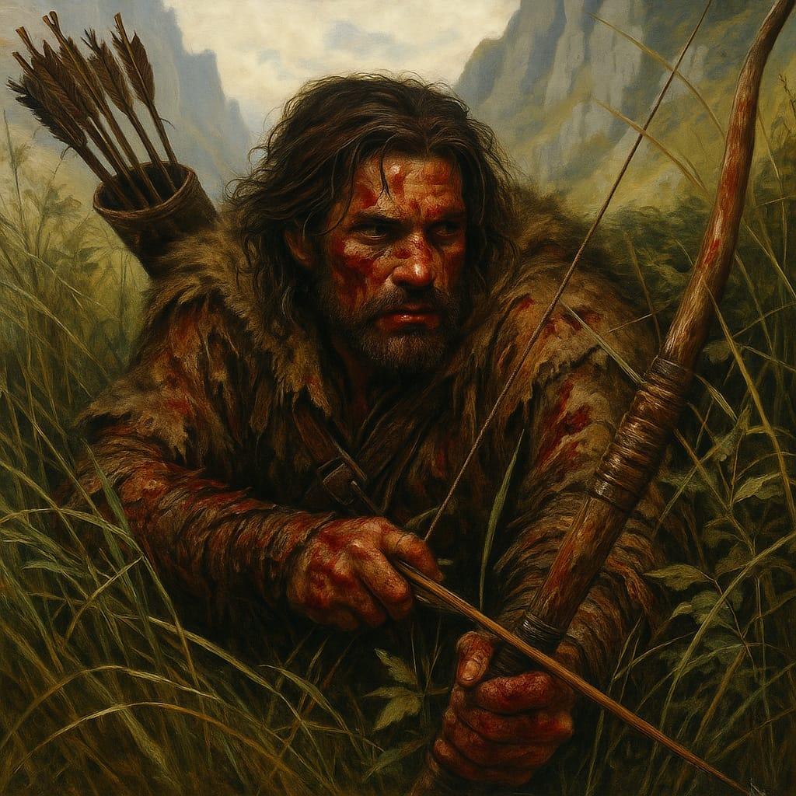

Theron, o Ferido
Informações básicas
Nome do personagem: Theron, o Ferido
Classe: Caçador
Raça: Humano
Status
Vida: 33/60
Concentração: 10/10
Inventário
Arco de madeira
6 flechas
Faca curta
Ouro: 36
Habilidades
Olhar do Predador (Habilidade Ativa)
O caçador observa com calma quase sobrenatural, buscando a falha, a abertura no movimento do inimigo. Quando encontra, dispara com precisão mortal. Seu ataque não é apenas certeiro, mas fatal.
Efeito: O próximo ataque do caçador contra um inimigo tem dano aumentado em +50% (metade do dano base é somado como bônus). Deve ser usado antes do ataque.
Custo de Concentração: 3 + 1d4 pontos.
Flecha da Gravidade (Habilidade Ativa)
Com uma habilidade quase artística, o caçador dispara uma flecha equipada com uma corda resistente. Ao acertar o inimigo, ele pode puxá-lo para o chão ou para perto, desequilibrando-o e deixando-o vulnerável.
Efeito: Ao acertar o inimigo, o caçador pode puxá-lo para o chão ou para perto, anulando sua próxima ação de movimentação e dando vantagem em ataques contra ele no próximo turno. Será necessária uma corda no inventário e a corda poderá ser danificada ou perdida em caso de falha. Deve ser usado antes do ataque.
Custo de Concentração: 4 + 1d4 pontos.
Sussurro da Morte (Habilidade Ativa)
Com um murmúrio sombrio, o caçador concentra sua mente e dispara uma sequência rápida de flechas certeiras. Cada disparo é carregado com a precisão de um predador que não deixa chances escapar.
Efeito: O caçador pode atacar até 1+1d4 inimigos diferentes em alcance visual. Cada ataque tem dano normal, e os inimigos devem fazer um teste de resistência. Quem falhar sofre penalidade de -1 na próxima ação.
Custo de Concentração: 5 + 1d4 pontos.
Recuperação de Concentração: O caçador recupera pontos de Concentração quando está fora de combate, focando para manter sua precisão e calma.